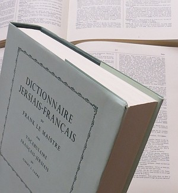

Trenton, Michigan, USA
Lé 11 de dézembre, 1982.
Moussieu l'Rédacteu,
 Tant pus qu' nou-s-êtudie lé Dictionnaithe Jersiais-Français du Docteu Fraînque Le Maistre, tant pus nou rêalise qué nouot' connaissance dé nouot' propre langue est lînmitée. Par exempl'ye, les mots boutrer, bout'rêsse, bouvée, bouvet, bouvette, bouv'ter et bouvtheu s'entre'èrsemblient pus ou mains, mais i' y'a eune difféthence entouôrre chein que châtcheun d'ches mots-là veurt dithe.
Si j'tais à êprouver à pâsser un examen dans ma connaîssance dé la langue où'est tch'i' faudrait en donner l'usage, j'sis seux qué jé n'pouôrrais pon l'faithe sans l'aîgue du dictionnaithe. Eh bein, êprouvons à les dêchiffrer.
Lé mot boutrer veurt dithe battre au fliais. Lé temps pâssé nou soubattait et pis nou finnissait au fliais. Lé mot bout'rêsse veurt dithe eune vaque tch'est enclyînnée à bouter. I' s'adonnait tchiquefais qué ch'tait ieune des miyeu vaques à lait tch'avait chutte faute-là.
Lé mot bouvée est intérêssant. Ch'tait eune ancienne mésuthe dé tèrre tch'avait comme originne souô-disant autant comme un boeu pouvait en labouother dans un an. En Jèrri, la bouvée 'tait à bein près vingt-quatre vrégies. Y' avait quarante pèrques à la vrégie, quatre vrégies à l'acre et siex acres à la bouvée. Chose assez èrmerquabl'ye est qué les m'suthes Dgèrnésiaises né sont pon exactement comme les nouôtres - la vrégie y'est un mio pus p'tite.
Lé bouvet est un rabot d'ménuisyi et d'tchèrpentchi. Atout un bouvet i' font des boëteuses. Et la bouvette est un p'tit bouvet. Lé mot bouv'ter veurt dithe chein qué l'ménuisyi (ou l'tchérpentchi) fait auve lé bouvet, par exempl'ye, faithe la langue et emboëter. Lé mot bouvtheu n'est pon êtrange ès Jèrriais, étant l'nom du fanmeux p'tit ouaîsé tch'est bein connu. I' pathaît tch'i' vivent bein en cage, les bieaux p'tits bouvtheurs. Et nou-s-appelle un drôle dé p'tit bouanhomme un drôle dé bouvtheu!
Mais nouot' vielle langue en est plieine dé mots tch'ont eune cèrtaine èrsembliance l's uns ès autres mais tchi veulent dithe tchiquechose absolûment difféthent. Lé mot radgîn, par exempl'ye, veurt dithe fort ou âpre, comme dans "La soupe à l'goût radgîn; ch'est les navets tchi sont trop radgins tchi lî donnent chu goût-là." Mais radgîn veurt dithe un gros feu, étout, comme dans "J'avons ieu un radgîn d'feu toute la séthée."
Lé mot radigot veurt dithe p'tit ou failli, comme dans "Ch'est d'tchi hardi radigot" ou "Un pouôrre petit radigot d'homme tchi n'est qu' haut comme un pot d'cidre." Les mots Radîndgette et Radîngot èrsembl'yent hardi à radigot, et il' ont p't-êt' d'la pathenté. Nou les trouvent dans la vielle chanson dé "Jean, gros Jean, mathyit sa fil'ye, Grôsse et grâsse et bein habil'ye, À un marchand dé chabots Radîndgette et Radingot!"
Le mot radober veurt dithe èrpather, comme dans radober eune vaile ou un mât, radober un baté pêtcheux, radober l'pont d'un navithe et, par extension, radober eune brînge d'êtabl'ye, etc. Lé mot rados veurt dithe du nettissage, comme dans "J'avons donné un rados à la lait'tie ch't' arlévée; ou n'n'avait grand bésoin."
Né v'chîn acouo tchiques mots qué nou n'ouait pon souvent en convèrsâtion d'nouos jours. Ch'est pourtant des vièrs mots qu' j'avons héthité d'nouos anchêtres. Les v'chîn : Oeutchiéthe, ohieux, olympe, ongliet et ôque. Lé mot oeutchiéthe dait êt' connu par les cheins tch'ont des poules dans l'poulailli, car v'là tchi veurt dithe qué ch'est l'pâssage par où'est qué l'oeu d'scend quand eune poule pond.
Lé mot ohieux veurt dithe qué tchique pèrsonne, annima ou chose tchelconque a un d'faut. Par exempl'ye, nou pâle d'un j'va ohieux, et d'eune femme ohieuse - auve d'fauts et pûtôt têtue. Eune olympe est eune pèrsonne sans ênèrgie. Un ongliet est lé p'tit canné au haut d'l'aleunmelle d'un cannif ou d'eune brioche dans tchi qu' nou met l'ongl'ye du ponchet d'dans pour l'ouvri.
Lé mot ôque est eune pétite cope en forme d'la lettre "v" qué nou fait sus l'bord d'un mio d'bouais pour lé r'connaître. Dans les vièrs temps, quand i' n'y'avait pon fort dé pèrsonnes tchi savaient liéthe et êcrithe, un journalyi copait tchiquefais eune ôque sus l'bord d'eune plianche ou un mio d'bouais touos les jours pour èrcorder ses journées. Ichîn, en Améthique, dans l'temps que l'Ouest 'tait en train d'êt' civilisé, les pionnièrs, chèrcheurs d'or, aventuthièrs et malfaiteurs en copaient ieune sus la tchulasse dé lus armes (ou pistolets) châque fais tch'i' tithaient un homme en tchérelle ou dispute quand i' fréquentaient l's aubèrges et maisons d' dêbauche, pour garder compte dé lus contchêtes et survivance. I' faut penser qué quand nou viyait un îndividu atout un tas d'ôques sus sa tchulasse ch'tait dangereux d'lî chanter pouoilles!
Et, étout, eune ôque 'tait eune mèrque du propriêtaithe copée dans les ouothelles dé brébis.
Viyiz étout: